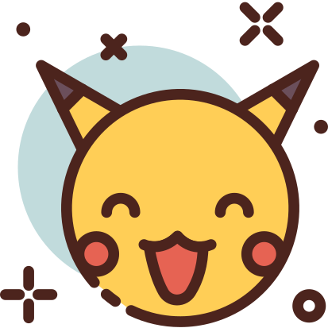

PokéCuriosidades! 
A primeira geração teria 190 Pokémons
Isso mesmo, existiriam 39 a mais! Contudo esses 39 a mais foram deixados para serem adicionados aos jogos da II Geração.Os pokémons que também fariam parte da primeira geração incluem: Scizor, Shuckle, Heracross, Sneasel, Teddiursa, Ursaring, Slugma, Magcargo, Swinub, Piloswine, Corsola, Remoraid, Octillery, Delibird, Mantine, Skarmory, Houndour, Houndoom, Kingdra, Phanpy, Donphan, Porygon2, Stantler, Smeargle, Tyrogue, Hitmontop, Smoochum, Elekid, Magby, Miltank, Blissey, Raikou, Entei, Suicune, Larvitar, Pupitar, Tyranitar, Lugia e Ho-Oh. Por que não foram adicionados? Provavelmente devido ao espaço do cartucho do Gameboy que não fora suficiente
O nome de “Ash” no Japão é uma homenagem ao criador da série
Ash veio do nome original, que em japonês se chama Satoshi. A escolha foi uma homenagem ao criador de Pokémon, Satoshi Tajiri.
Clefairy seria a protagonista do anime, não o Pikachu
Inicialmente, os criadores do anime pretendiam que Clefairy fosse o mascote principal de Ash. Entretanto, alguns dias antes do desenho começar a ser feito eles resolveram trocá-lo por Pikachu.